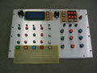
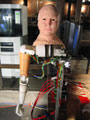

people doing strange things with electricity
The December dorkbot-nyc marked 5 full years of dorkbot! How'd that happen?
*****
The nine million and twenty second dorkbot-nyc meeting took place on Thursday, December 8th at 7pm at Location One in SoHo.
It featured the lovely and talented:
 Newton Armstrong: Mr. Feely
Newton Armstrong is a composer and improviser working with a variety of electronic instruments. He'll be presenting Mr. Feely -- a not-quite-finished solid state embedded Linux synthesizer.
http://silvertone.princeton.edu/~newton Eyebeam OpenLab: An overview
James Powderly and Limor Fried will give an overview of the new Eyebeam OpenLab. The Eyebeam OpenLab is a home for artists, engineers and hackers pioneering open source creativity. The first initiative of its kind, the lab is focused entirely on incubating experimental technologies and media that directly enrich the public domain. With funding from the MacArthur Foundation and others, Eyebeam has awarded fellowships to a talented, interdisciplinary group of OpenLab fellows who work in a new facility equipped with a laser cutter, 3D printer, workstations, web servers, and electronics workbenches. These fellows are already generating ideas and building new projects, extending the innovative work of Eyebeam R&D. The Eyebeam OpenLab is dedicated to public domain R&D. All our work is distributed under open licenses that allow other artists, hackers, and engineers to remix our work, contribute to our projects, and build on top of our efforts. Specifically, our code is released under GPL, our content is distributed under Creative Commons, and our hardware is released with DIY instructions.
http://www.eyebeam.org/reblog/archives/2005/11/eyebeam_openlab_launches_overvie_1.html
Zach Layton: Biofeedback over bluetooth
Zach Layton is a new york based composer interested in biofeedback techniques and psychoacoustics. He is also the organizer of the monthly experimental music series "Darmstadt: classics of the avant garde". His work has been performed at the Aspen Music festival, Cleveland Chamber Symphony and at the Seventh International Performance Art Festival in Berlin. Currently he's working on a wireless EEG interface and is working with sinewaves creating binaural beating patterns.
http://www.zachlaytonindustries.com
Some photos from Floor Van Herreweghe: one two three four five
dorkbot-nyc regular Joel Schlosberg posted a blog entry about the meeting here: dorkbot turns five!
{kind=link}
{kind=link}
{kind=link}
{kind=link}
{kind=link}